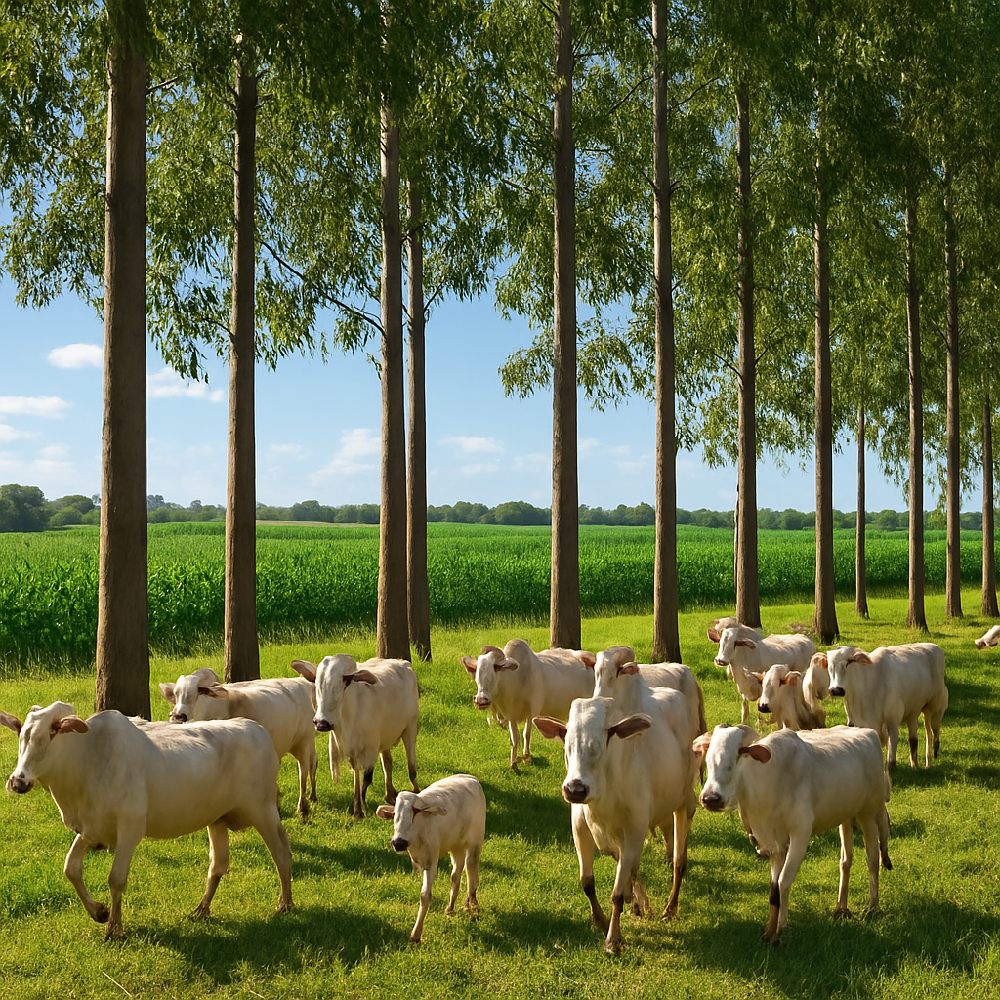
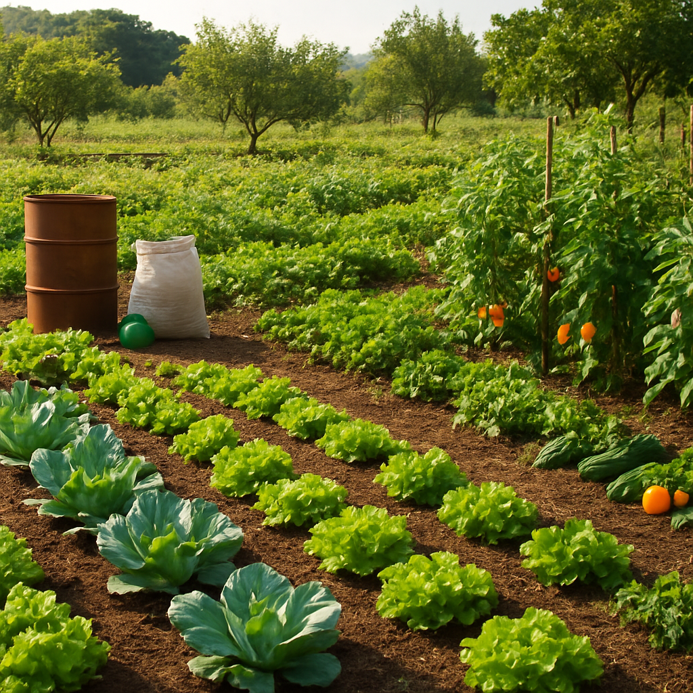
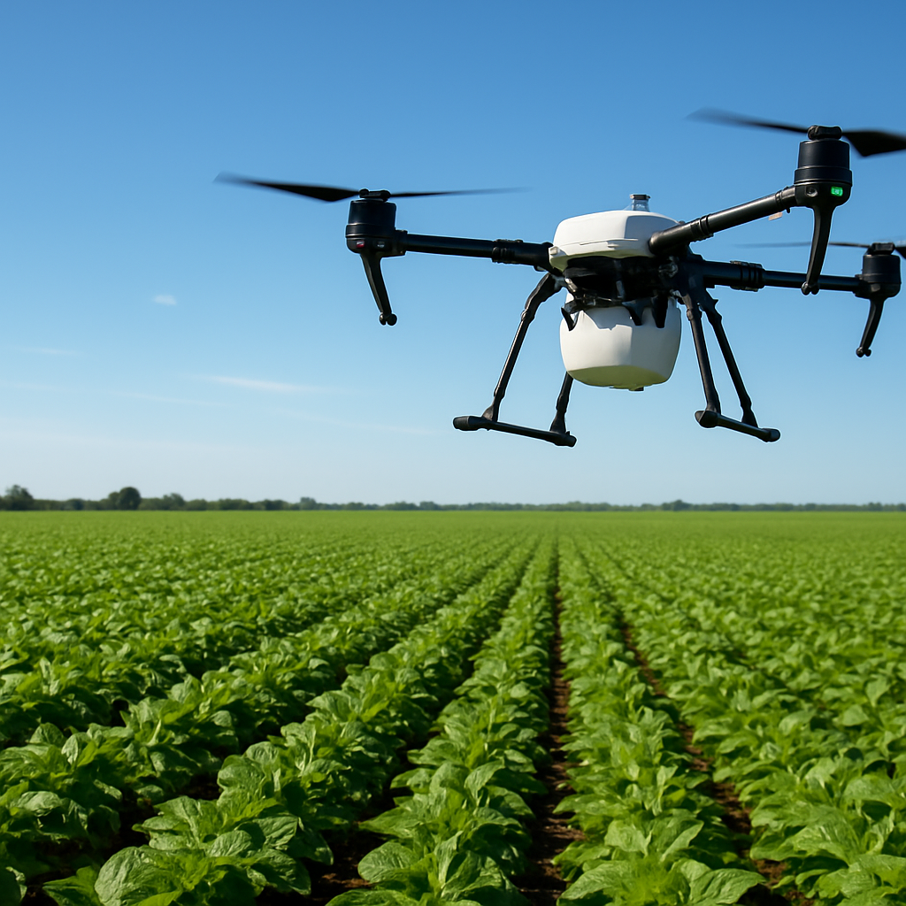

Equilíbrio entre produção e meio ambiente
A agricultura sustentável é um modelo de produção que busca atender às necessidades alimentares da população atual sem comprometer a capacidade das gerações futuras de suprir suas próprias necessidades.
No Brasil, o agronegócio sustentável se baseia na integração entre produtividade, preservação ambiental e políticas de incentivo. O país utiliza cerca de 26,7% do território nacional para a preservação de vegetação nativa em imóveis rurais, demonstrando o compromisso com o equilíbrio entre produção e conservação.
Segundo a Embrapa, a agricultura sustentável envolve práticas que protegem o meio ambiente, mantêm a saúde do solo, utilizam água de forma eficiente e garantem condições justas para os trabalhadores rurais.

Sistema que combina cultivos agrícolas, criação de animais e plantio de árvores na mesma área. Isso aumenta a produtividade, melhora o solo e sequestra carbono da atmosfera.

Uso de produtos biológicos para controle de pragas e fertilização do solo, reduzindo a dependência de agroquímicos. O Plano Nacional de Agroecologia (Planapo) incentiva essas práticas.

Uso de tecnologias como drones, GPS e sensores para otimizar o uso de insumos, água e energia. Isso reduz desperdícios e minimiza o impacto ambiental da produção.
Dados sobre sustentabilidade no agronegócio brasileiro
Práticas sustentáveis reduzem emissões de gases de efeito estufa e aumentam o sequestro de carbono.
A proteção de nascentes e matas ciliares garante água limpa para consumo e irrigação.
Áreas de preservação mantêm habitats para espécies nativas de fauna e flora.
Solos saudáveis e sistemas diversificados garantem produção de alimentos a longo prazo.
Informações baseadas em fontes oficiais e confiáveis